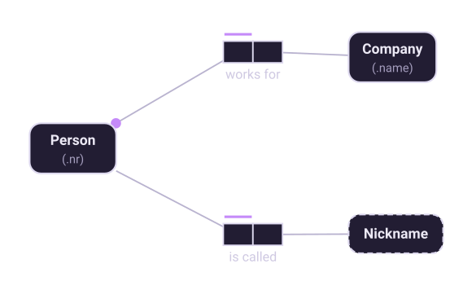
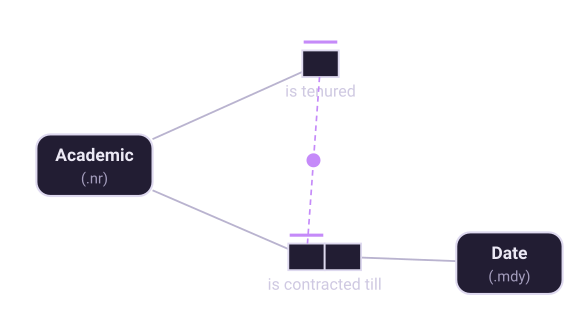

Chapter 6 of 10
Mandatory roles
Which roles must be played — and what an optional role is quietly telling you.
The definition
A role is mandatory (or total) for an object type if and only if every object of that type that is referenced in the database must be known to play that role. It is drawn as a solid dot where the role connector meets the object type.

Combined with uniqueness, mandatory is what produces the sentence most people actually want:
Each Person works for exactly one Company. mandatory + unique
Each Person works for at most one Company. unique only
Each Person is called some Nickname. mandatory only"Exactly one" is not a primitive in ORM. It is the conjunction of two independent constraints, and keeping them separate is what lets you change one without the other.
Mandatory means "known", not "true"
The wording of the definition repays attention. It says every object referenced in the database must be known to play the role. It is a constraint on what the system records, not a claim about the world.
Every person has a birth date whether or not you record one. Making the birth-date role mandatory says something much stronger: that this system refuses to know about a person whose birth date it does not have. That is often wrong, and it is the single most common over-constraint in practice. Before adding a dot, ask: can this thing exist in our records before we know this? If a customer is created at first contact and the address arrives later, the address role is optional — and the model should say so.
Disjunctive mandatory
Sometimes no single role is mandatory, but one of a set must be played. An academic is either tenured or contracted until some date; neither alone is required, but you cannot be neither.

This is a disjunctive mandatory — also called an inclusive-or constraint — drawn as a dot joined to each of the roles it spans. It says the disjunction is mandatory: at least one of these roles must be played.
Note the "at least". If the two are also mutually exclusive — you cannot be both tenured and contracted — that is a separate exclusion constraint, covered in chapter 7. The two together are what ORM calls an exclusive-or, and they are drawn overlaid. Keeping them separate is deliberate: plenty of real disjunctions are not exclusive, and plenty of exclusions are not mandatory.
The implicit case
There is one convention worth knowing. If an object type plays only a single fact role in the whole schema, that role is mandatory by default and the dot is usually not drawn — otherwise the type would have no reason to be in the model at all. Reference roles work the same way: the value role of a reference scheme is mandatory by implication.
Optional roles are where subtypes hide
Here is the part that turns this chapter into the next one. When you find an optional role, ask why it is optional. There are two possible answers, and they lead to different models.
The value is simply not always known. Some people have not told us their nickname. The role is genuinely optional and stays that way.
The role only applies to some well-defined kind of thing. Only students have a matriculation number; only managers control a budget. The role is not optional for students or managers at all — it is mandatory for them, and meaningless for everyone else.
Halpin's procedure makes this a formal step: inspect each optional role, and if the role is played only by some well-defined subtype, introduce a subtype node and attach the role to it. That turns a vague optionality into a precise statement, and it is the subject of chapter 8.
Checking mandatory constraints with data
The population test works here too, in a specific form: look for gaps. Take twenty rows of the real report and check whether any row is missing a value in that column. One blank is enough to disprove a mandatory constraint — and if there are no blanks, ask whether that is a rule or an accident of the sample.
Going further. This chapter is the short version. Fact-Based Agents covers it as “The Constraint Family” — mandatory beside frequency, ring, set-comparison, value, cardinality and subtype sets, each with its verbalization.
Eighteen chapters, 61 diagrams and 38 working models, on Leanpub.